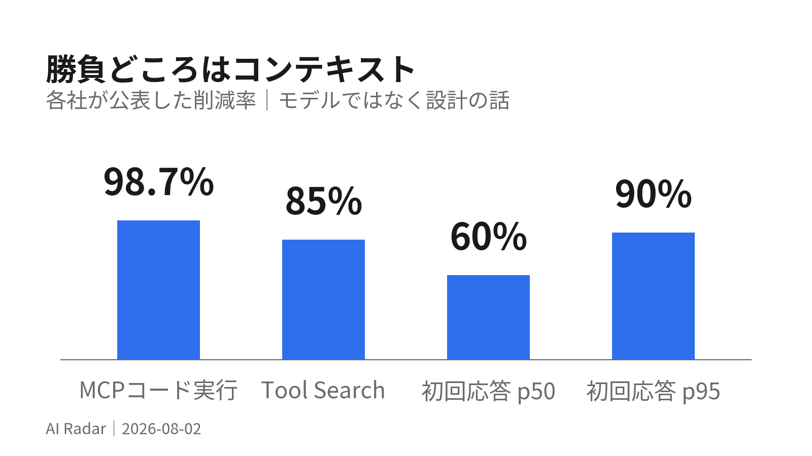

勝負どころはコンテキスト

各社の発表を横に並べると、競争軸が「モデルの賢さ」から「コンテキストをいかに使わずに済ませるか」に移っている。
トークン98.7%削減、85%削減、初回応答60%短縮。どれも新しいモデルの話ではなく、設計の話である。
もうひとつの流れが「エージェントを人のように割り当てる」で、Notion では Claude と Cursor をボードから指名できるようになった。
01MCPのコード実行でコンテキストを98.7%削減
エージェントにツールを呼ばせるのではなく、ツールを呼ぶコードを書かせて実行環境で走らせると、コンテキスト消費が最大98.7%減る。
詳しく読む
MCPサーバーを繋ぎすぎると、ツール定義と実行結果だけで5万トークン超を食うことがある。コード実行方式なら中間結果は実行環境に留まり、明示的にログや戻り値にしたものだけがモデルに見える。ループ・条件分岐・データ変換はコードのほうが自然に書けるし、if文の評価をモデルに待たせないぶん初回応答も速くなる。
繋ぐMCPを増やすほど遅く高くなる、という体感には理由がある。「ツールを呼ぶ」から「ツールを呼ぶコードを書かせる」への切り替えは、自分でエージェントを組むときの第一の設計判断になる。
出典: Code execution with MCP: building more efficient AI agents
02Tool Search Tool で85%のトークンを温存
Claude Developer Platform の advanced tool use が GA。目玉の Tool Search Tool は、全ツール定義を先に読み込まず必要になったものだけ発見する。
詳しく読む
結果として、従来方式の残コンテキスト122,800トークンに対し191,300トークンを温存（約85%削減）。ツールライブラリ全体へのアクセスは保ったままこれを実現している。
同時にGAしたのが Programmatic Tool Calling（Claudeがツール呼び出しをPythonで書き、サンドボックスで実行。結果はスクリプトが処理し、モデルは最終出力だけを見る）と Tool Use Examples（ツールの使い方の実例を渡す標準形式）。code execution と memory も併せてGA。
「ツールを減らす」ではなく「ツールは持ったまま、見せる量を減らす」という解き方。今日のAI Radar自体、ツール検索で必要なものだけ読み込む構成で動いている。
出典: Introducing advanced tool use on the Claude Developer Platform
03brain と hands を切り離して初回応答が60%短縮
Anthropic のマネージドエージェントの設計変更。ハーネス（brain）をコンテナの外に出し、コンテナは必要なときだけツール呼び出しで確保する構成にした。
詳しく読む
効果は明確で、time-to-first-token が p50 で60%、p95 で90%以上短縮。従来はbrainがコンテナ内にあったため、推論の前に毎回コンテナ起動コストを払っていた。副次的な効果として、顧客が自社VPC内のリソースに対して作業させたいという要望も解けた（ハーネスがコンテナ内にある前提が消えたため）。各 hand は標準インターフェースを持つツールになり、任意のカスタムツール・MCPサーバーを差せる。
出典: Scaling Managed Agents: Decoupling the brain from the hands
04Notion 3.6、Claude と Cursor を「外部エージェント」として指名できる
2026年7月1日のリリース。CLI・IDE・別アプリで動いているエージェントに、Notionの共有ボードからタスクを割り当てられるようになった。
詳しく読む
メンションして呼び、実行の様子を眺められる。第1弾の統合対象が Claude と Cursor。 エージェントを「別のツール」ではなく「ボード上のチームメイト」として扱う設計。
複数のAIツールを行き来している人ほど効く。タスク管理側を起点に、どのエージェントに投げるかを決めるという順番になる。
出典: Notion 3.6: External Agents, HTML blocks, and more（2026-07-01）
05Notion エージェントが PPTX / XLSX / DOCX を読み書き
同じ 3.6 で、Notion Agents が Office 系ファイルに対応。スプレッドシート・スライド・Word文書を読み、かつ生成できる。
詳しく読む
選べるモデルも拡大し、Opus 4.8 / Grok 4.3 / 低コストの open-weight GLM 5.2 から選択できる。
06Notion の Webhook が双方向になった
Custom Agents はタスクの振り分け、社内Q&A、日次スタンドアップ、ステータスレポートを一度設定すれば24時間動き続ける。
詳しく読む
加えて Webhook が双方向化。Workers が webhook を受けてロジックを実行し、Notionを操作したり他のAPIを呼んだりできる。任意のアプリからNotionを起動できるようになった。
出典: Introducing Custom Agents / Notion 3.5: Developer Platform（2026-05-13）
07企業の80%がエージェントで「実測できるROI」を報告
Anthropic が技術リーダー500名超に聞いた調査。80%が測定可能な経済的リターンを既に得ていると回答。
詳しく読む
論点は「導入するか」から「どう規模を広げるか」に移った。81%がより複雑なユースケースに取り組む予定（39%が複数ステップのプロセス、29%が適用範囲の追加）。効果の大きい用途はデータ分析とレポート生成が60%、社内プロセス自動化が48%。今後1年では56%が調査・レポート業務への適用を計画。
「データ分析とレポート生成が60%」は、AI Radar がやっていることそのもの。調査・要約・レポートは、企業が最初に成果を出している領域という裏づけになる。
0857%が複数ステージのワークフローにエージェントを投入
同調査より。半数超（57%）が複数ステージのワークフローでエージェントを運用しており、うち16%は複数チームをまたぐ横断プロセスまで進んでいる。
詳しく読む
戦略としては中庸が主流で、多くの組織が「既製のエージェントが効くところは既製を使い、カスタマイズが明確な優位を生むところにだけ開発リソースを割く」という選び方をしている。
09時間削減は4領域でほぼ同率
エージェンティックコーディングの調査。時間が浮いた領域の比率が驚くほど揃っている。
詳しく読む
| 領域 | 割合 |
|---|---|
| コード生成 | 59% |
| 調査・ドキュメント | 59% |
| コードレビュー・テスト | 59% |
| 計画・アイデア出し | 58% |
コードを書く以外の3領域が同率という点が重要。エンジニアリングの外にも広がる根拠になっている。
「AIはコードを書くもの」という認識だと3/4を取り逃す。調査・レビュー・計画のほうが、非エンジニアの業務にそのまま転用できる。
10Claude Code の会話の79%は「自動化」
同レポートより。Claude Code 上の会話の79%が automation（AIが直接タスクを実行）に分類され、augmentation（人の能力を補強）は21%。対して claude.ai では automation は49%にとどまる。
詳しく読む
人とAIの分担も明確で、計画（何をするか）は人が決め、実行（どうやるか）はClaudeが決めるのが典型。そしてその人の専門性が高いほど、1回の指示でClaudeがこなす仕事量が増える。
最後の一文が効く。AIを使うほど専門知識が要らなくなるのではなく、逆に効いてくる。 業務理解が深い人ほど指示が短くて済む。
11分析業務は全タスクの49%（複数ステップを数えると）
Microsoft が7月30日に出した観測。単発のタスクとして数えると分析関連は29%だが、複数ステップのワークフローとして数えると49%に跳ね上がる。
詳しく読む
つまりAIは「タスクを終わらせる」段階から「ワークフロー全体を終わらせる」段階に移っている。業種別では製造・銀行・ソフトウェアが引き続き上位だが、自動車と医療が最も成長の速い採用層として浮上している。
出典: The next measure of AI momentum is work transformed（2026-07-30）
12eval の合格率0%は「エージェントが無能」ではなく「タスクが壊れている」
エージェント評価の設計論。多数試行して合格率0%なら、それはほぼ必ずタスク定義かグレーダーの不備のサイン。
詳しく読む
原則が3つ。グレーダーが見る項目はすべてタスク記述から読み取れること（曖昧な仕様で落とさない）。各タスクにリファレンス解（全グレーダーを通る既知の正解）を用意し、解けること・グレーダーが正しく設定されていることを検証する。そして振る舞いが起きるべきケースと起きるべきでないケースの両方をテストする。片側だけだと片側だけ最適化される（検索すべきときだけ検証すると、何でも検索するエージェントができあがる）。
「AIがうまくやってくれない」ときの見方が変わる。まず指示のほうを疑う。 リファレンス解を先に用意するのは、人への依頼にもそのまま効く。
13compaction / note-taking / マルチエージェントの使い分け
コンテキスト管理の手法選択。用途で明確に分かれる。
詳しく読む
compaction は長い往復が必要なタスク向け（会話の流れを保つ）。note-taking は明確なマイルストーンがある反復開発向け。マルチエージェントは並列探索が効く複雑な調査・分析向け。
compaction の設計では、まず recall を最大化（トレースから関連情報を漏れなく拾う）してから、余計なものを削って precision を上げる、という順序が推奨されている。圧縮しすぎると、後になって重要と分かる微妙な文脈が失われる。
14Slack Enterprise Search が提供開始、Today は順次展開
Enterprise Search は Enterprise Grid プランかつ Slack AI ライセンスを持つ顧客に提供開始。Google Drive と GitHub 向けのコネクタはリクエストベースで利用可能、順次展開中。
詳しく読む
Today（日次ブリーフィング）は Business+ V2 / Business+ V1（AIアドオン）/ Enterprise+ V2 / Enterprise Select（AIアドオン）/ Enterprise Grid（AIアドオン）に順次展開。Enterprise プランではオープンベータ。
出典: Find Everything: Introducing Enterprise Search in Slack / Today by Slack
15Gemini API の Managed Agents に背景実行とリモートMCP
Google 側の動き。Managed Agents にバックグラウンド実行、リモートMCPサーバー連携、カスタム関数呼び出し、対話をまたいだ認証情報の更新が追加された。
詳しく読む
antigravity-preview-05-2026 エージェントは既定で Gemini 3.6 Flash で動くようになり、コード変更なしで次の対話から適用される。企業向けには Google Cloud Next '26 で Gemini Enterprise Agent Platform が発表され、Vertex AI のモデル構築・チューニングに、エージェントの統合・セキュリティ・DevOps 機能が乗る形になった。
出典: Expanding Managed Agents in Gemini API / Gemini Enterprise Agent Platform
国内企業の導入事例は今日は載せていない。 別途調べた東京海上日動（応対時間 最大30%削減／年間約58,000時間）、小林製薬（FAQ作成工数75%削減）などは数字も企業名も揃っているが、公開が3月前後で新しくない。国内は改めて直近の一次ソースを当たる。
検証の深さについて。 項目1〜3、7、9、10、12 は本文または一次資料まで確認済み。項目4〜6、8、11、13〜15 は公式ドメインの記事見出し・要約レベルでの確認にとどまる。数字と固有名詞は公式ページ由来のものだけを書いているが、文脈の細部は原典を開いて確かめてほしい。 出典URLはすべて実在を確認済み。